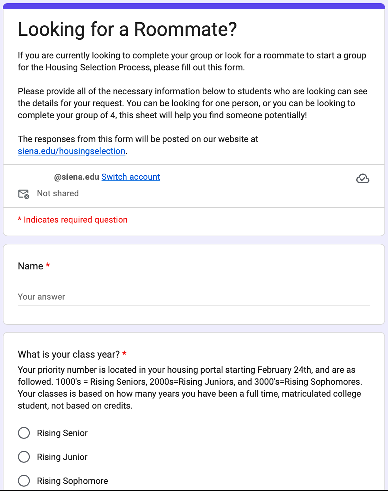
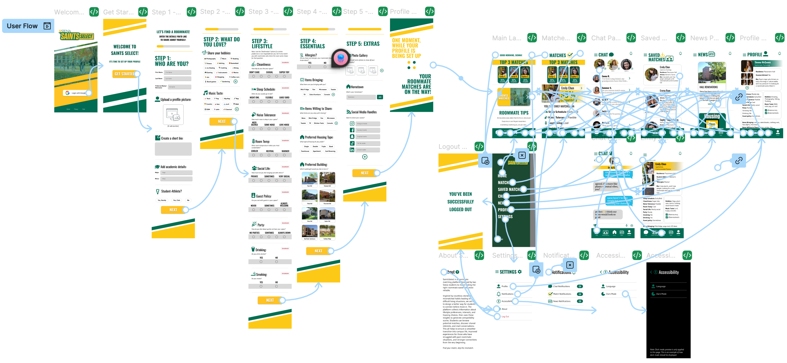

“[SaintsSelect] has the potential to change Siena’s student networking.” — Key insight from student questionnaries
SaintsSelect started as a class project focused on improving Siena’s roommate matching experience. After
seeing how the existing process could lead to poor roommate matches, I saw an opportunity to take the idea
further.
I took the initiative to present the concept to the head of Siena’s Student Life, who responded positively to
the idea. From there, my partner and I continued developing the concept and refined the experience based on
feedback from Siena students.

Siena’s original roommate matching form lacked structure, personalization, and meaningful compatibility indicators.
I took the lead in shaping the project and designing the mobile experience. We conducted student interviews
and questionnaires to better understand frustrations with the existing roommate process. Students pointed to
issues like limited lifestyle questions, random matches, and not having enough information about potential
roommates.
These insights directly influenced our design decisions. I mapped out the user experience and designed the
high-fidelity mobile prototype in Figma, focusing on making the process feel simple, personalized, and easy to
navigate.

The SaintsSelect user flow (mobile version).
SaintsSelect brings roommate matching, compatibility, and communication into one experience.
Personalized Matching
A five-step questionnaire asks about sleep habits, cleanliness, room temperature, study routines, social
habits, and other lifestyle preferences.


The completed SaintsSelect concept was presented to Siena Student Life and later brought to Siena’s Software
Engineering program for implementation. The application is currently being developed by Siena software
engineering students.
What started as a class assignment became a project I took ownership of and helped move toward real
implementation. This experience taught me that UX design can go beyond creating a prototype. Recognizing a
real problem, advocating for an idea, listening to users, and helping move a project forward were just as
important as the final design.
Check out the full Figma prototype
here.